1092E10 counter-rotating shaft drive toothed belt - r + r
- Path
- Procedures > 10 ENGINE > 1092 VARIOUS ENGINE COMPONENT CONTROLS > 1092E counter-rotating shaft drive > 1092E10 counter-rotating shaft drive toothed belt - r + r
- Kind
- repair procedure (removal / refitting; the operation number is the code)
- Applies to
- all engines; all production periods
- Interactive page
- https://sloeber94.github.io/elrnDB-a156/en/#/3237715
Applies to: all engines; all production periods
 Removing
Removing
 Refitting
RefittingPlace the car on the lifting bridge.
7055B54 under-engine guard - r r
- 4450B80 cap of one wheel - r+r
4450B10 Front WHEEL (one) - R.R.
7055B64 Engine compartment DUST shield in front wheel arch (one), left or right - R.R.
1092G10 single engine belt r r
1092G20 engine component single belt fixed tensioner - one - r + r
1092A10 Crankshaft services PULLEY - R.R.
1032D12 timing system protective cover(s) - r + r
1. Unscrew fixing nut (1a) of counter-rotating shaft belt tensioner (1b) in order to slacken belt, then remove it.
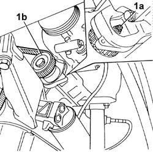
Applies to: all engines; all production periods
Refitting
Removing1. Position counter-rotating shafts so as notches on their pulleys (1a) are aligned with those on front covers (1b).
2. Temporarily fit timing lower cover and crankshaft pulley to check notches (2a) and (2b) alignment.
Fit counter-rotating shaft belt.
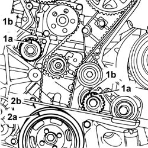
Applies to: all engines; all production periods
1. Tension counter-rotating shaft belt by means of tool (1a) till reference hole (1b) on belt tensioner is brought in the centre of rotation sector.
 | Name | Country |
|---|---|---|
1a | Key | 1.822.154.000 |
2. Tighten nut of belt tensioner for counter-rotating shaft belt.
 | Fastening | Component | Ø | Value (daNm) |
|---|---|---|---|---|
2 | Nut | COUNTER-ROTATING SHAFT BELT TENSIONER | M6 | 1.2 |
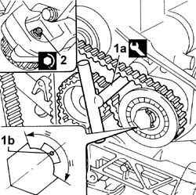
Applies to: all engines; all production periods
End by carrying out the following operations:
1032D12 timing system protective cover(s) - r + r
1092A10 Crankshaft services PULLEY - R.R.
1092G20 engine component single belt fixed tensioner - one - r + r
1092G10 single engine belt r r
7055B64 Engine compartment DUST shield in front wheel arch (one), left or right - R.R.
4450B10 Front WHEEL (one) - R.R.
- 4450B80 cap of one wheel - r+r
Applies to: engines: 2.0 JTS, 2.0 JTS; all production periods
Removing
RefittingPosition the vehicle on the ramp.
Ensure that the ignition key is in OFF position, then disconnect the negative battery terminal.
 | Name | Connector |
|---|---|---|
- | Battery |
Proceed with removal 4450B04 right front wheel r r .
Proceed with removal 7055B54 under-engine guard - r r .
Proceed with removal 1016A40 ignition coil cover on cylinder head- r+r .
1. Remove the buttons (1a), undo the attachments (1b) and remove the front right wheelarch mudguard (1c).
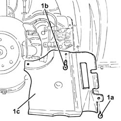
Applies to: engines: 2.0 JTS, 2.0 JTS; all production periods
1. Undo the bolts (1a), nut (1b) and remove the engine components single drive belt protection (1c).
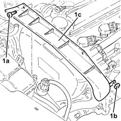
Applies to: engines: 2.0 JTS, 2.0 JTS; all production periods
1. Undo the nut (1a) and remove the brackets (1b) securing the power steering pipes.
2. Use a spanner on the moving tensioner (2a) and remove the single drive belt (2b).
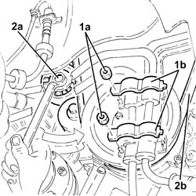
Applies to: engines: 2.0 JTS, 2.0 JTS; all production periods
1. Undo bolts (1a) and remove protection (1b).
2. Fit the flywheel lock.
| Name | Country |
|---|---|---|
2 | Counter-torque | 1.860.898.000 |
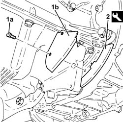
Applies to: engines: 2.0 JTS, 2.0 JTS; all production periods
1. Undo the bolts (1a) and remove the crankshaft pulley (1b).
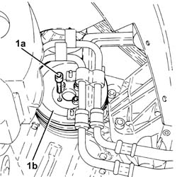
Applies to: engines: 2.0 JTS, 2.0 JTS; all production periods
1. Remove the cap (1a), undo the bolt (1b) and remove the single belt fixed tensioner (1c).
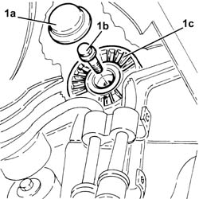
Applies to: engines: 2.0 JTS, 2.0 JTS; all production periods
1. Undo the bolts (1a) and remove the upper protective timing cover (1b).
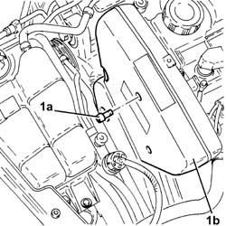
Applies to: engines: 2.0 JTS, 2.0 JTS; all production periods
1. Undo the bolts (1a) and remove the right side protective timing cover (1b).
2. Undo the bolts (2a) and remove the left side protective timing cover (2b).
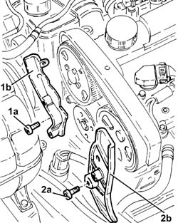
Applies to: engines: 2.0 JTS, 2.0 JTS; all production periods
1. Undo the bolts (1a) and remove the lower protective timing cover (1b).
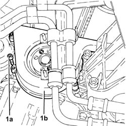
Applies to: engines: 2.0 JTS, 2.0 JTS; all production periods
1. Loosen the nut for the counter-balance shaft toothed drive belt tensioner.
2. Remove the counter-balance shaft drive belt.
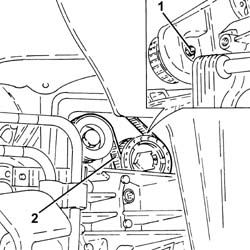
Applies to: engines: 2.0 JTS, 2.0 JTS; all production periods
Refitting
Removing1. Rotate the counter-balance shafts so that the references (1a) on the pullies are aligned with the ribs (1b).
2. Temporarily fit the lower timing cover and the crankshaft pulley and check the alignment of the references.
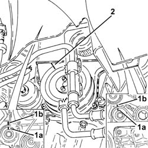
Applies to: engines: 2.0 JTS, 2.0 JTS; all production periods
1. Fit the counter-balance shaft toothed drive belt.
2. Tension the counter-balance shaft drive belt using the tool (2a) so that the reference opening (2b) in the belt tensioner is at the centre of the rotation sector.
| Name | Country |
|---|---|---|
2a | Key | 1.822.154.000 |
3. Tighten the nut fixing the counter-balance shaft drive belt tensioner to the recommended torque.
| Fastening | Component | Ø | Value (daNm) |
|---|---|---|---|---|
3 | Nut | COUNTER-ROTATING SHAFT BELT TENSIONER | M6 | (.Left. counter balance shaft front) cover side 0.8÷1.0 |
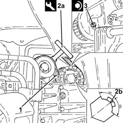
Applies to: engines: 2.0 JTS, 2.0 JTS; all production periods
Fit the lower protective timing cover and secure using the bolts.
Place the protective timing side covers back in their housings and secure them using the bolts.
Fit the upper protective timing gear cover and fix it using the bolts.
1. Place the engine components single drive belt fixed tensioner (1a) back in its housing and fix it tightening the bolt (1b) to the recommended torque.
| Fastening | Component | Ø | Value (daNm) |
|---|---|---|---|---|
1b | Bolt | FIXED SINGLE SERVICE BELT TENSIONER | M8 | 2.2 ÷ 2.8 |
2. Place the engine components single drive belt fixed tensioner plug back in its seating.
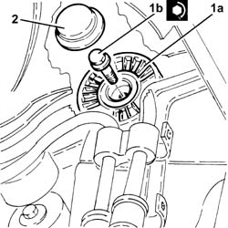
Applies to: engines: 2.0 JTS, 2.0 JTS; all production periods
Fit the flywheel lock.
| Name | Country |
|---|---|---|
- | Counter-torque | 1.860.898.000 |
1. Place the crankshaft pulley (1a) back in its seating and secure it tightening the bolts (1b) to the specified torque.
| Fastening | Component | Ø | Value (daNm) |
|---|---|---|---|---|
1b | Bolt | CRANKSHAFT PULLEY | M8 | 2.3 ÷ 2.8 |
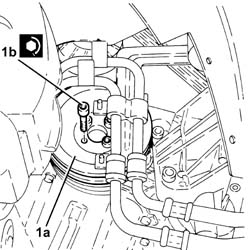
Applies to: engines: 2.0 JTS, 2.0 JTS; all production periods
Remove the flywheel lock.
| Name | Country |
|---|---|---|
- | Counter-torque | 1.860.898.000 |
Place the protection back in its housing and secure it using the bolt.
Use a spanner in an anti-clockwise direction on the moving tensioner and fit the engine components single drive belt.
Fit the brackets securing the power steering pipes in their seatings and secure them with their nuts.
Place the right front wheel housing dust protection back in its housing and secure it using the fastenings and buttons.
Refit the engine components single drive belt protection in its seating and secure with its nut and bolts.
Proceed with refitting 1016A40 ignition coil cover on cylinder head- r+r .
Proceed with refitting 7055B54 under-engine guard - r r .
Proceed with refitting 4450B04 right front wheel r r .
Connect the negative (-) battery terminal.
Remove the car from the ramps.
Topics linked from this page (10)
- 1016A40 ignition coil cover on cylinder head- r+r
- 1032D12 timing system protective cover(s) - r + r
- 1092A10 Crankshaft services PULLEY - R.R.
- 1092G10 single engine belt r r
- 1092G20 engine component single belt fixed tensioner - one - r + r
- 4450B04 right front wheel r r
- 4450B10 Front WHEEL (one) - R.R.
- 7055B54 under-engine guard - r r
- 7055B64 Engine compartment DUST shield in front wheel arch (one), left or right - R.R.
- A1B Battery ( BATTERY NEGATIVE )
Topics that link to this page (17)
- 0010M20 120,000km service coupon, emission control versions
- 1008C19 engine link mount - r r
- 1016C10 cylinder head - r + r and replace gasket
- 1020D18 front crank shaft cover oil seal - replace
- 1020E10 oil seal cover (one) - l or r - on counter-rotating shafts - r + r and replace seals
- 1020E20 front oil seal of one counter-rotating shaft, l or r - r + r
- 1028H10 connecting rod and piston set - r r
- 1032B14 toothed timing belt - r + r for timing adjustment or replacement versions with air conditioner
- 1032B47 toothed drive pulley - r r for versions with air conditioner
- 1032B52 toothed driven pulley (one) - r + r
- 1032C18 mobile timing system tensioner - r + r for 24 valve engines
- 1032C32 fixed timing system tensioner (one) r + r
- 1036C10 camshaft in cylinder head - r r on vehicle
- 1088C12 water pump - r+r for versions with air conditioner
- 1092E16 counter-rotating shaft drive toothed belt tensioner - r + r
- 1092E22 counter-rotating shaft drive toothed belt drive pulley - r + r
- 1092E26 counter rotating shaft pulley - r + r